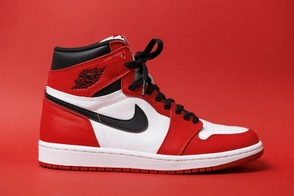

Nike Air Jordan
Nike Air Jordan is a line of iconic basketball shoes and apparel created in collaboration with NBA legend Michael Jordan. Here's a brief overview:
- Air Cushioning: Responsive Nike Air technology provides superior cushioning and impact protection.
- Innovative Design: Each model features innovative design elements inspired by Michael Jordan's playing style and achievements.
- Signature Models: From the legendary Air Jordan I to the latest releases, each shoe is a testament to Jordan's legacy.
- Limited Editions: Exclusive releases and collaborations with designers and artists make Air Jordan sneakers highly sought-after collectibles.
- Cultural Impact: Beyond the court, Air Jordan has become a global phenomenon, influencing fashion and culture worldwide.